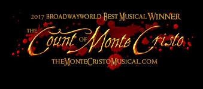

This is a fantastic book. Reading the pages leading up to
M. Morrel Sr.'s almost suicide was as tense as I've ever been, knowing that M. Comte de Monte Cristo
had already swooped in to save the day, yet Morrel, unaware of his saviour, was about to end his life
forced my eyes from line to line, hoping on each that his daughter, Julie, would come and inform him
of their good fortune.
The relationship between Eugenie Danglars and her music teacher, Louise D'Armilly,
is wholesome compared to the rest of the book. They are 100% "very close friends", getting
to ride off into the sunset after the failed marriage between False Prince Calvacanti and Eugenie.
As soon as Valentine "died" I felt that surely the Count must have given her a potion the likes of which
Juliet took, yet as the book reached its final pages and Maximillian's suicide drew closer and closer,
I began to fear that Valentine was truly dead, and that vengeance had blinded the Count, preventing his
mercy. Even allowing Maximillian to take the "lethal" dose of weed before finally returning Valentine to
Maximillian and the reader. Similar to his fathers near miss, I almost let out an audible sigh of relief
upon reading of Maximillian's joyous present and future.
I find it funny that we are first introduced to the Count of Monte Cristo (I say first for Edmond, Abbe Busoni
and Sinbad are different characters) by means of Franz, who has edibiles with him in a cave on a small island
in the middle of the med. Almost as if to say "wow this guys rich he can afford weed"
I think this book would be perfectly suited to adapt to a lego game. It has the right amount of plot points and settings
to split into decent sized levels, and I particularly like the idea of, as the Count reveals his past identity to people
him taking off various masks, for example when revealing himself to Villefort, he is first the Abbe Busoni, then,
removing this disguise, he is the Count of Monte Cristo, then again removing another mask, he is Edmond Dantes.
Here is what I imagine to be Edmond's clumsy escape plan,
killing guards and such, which was advised against by the good Abbe Faria.
At some points I found names hard to remember, so just altered them to something more memorable in my mind, hence;
Luigi Vampire, M. Pastrami and Franz d'Epiphany.
The Count is just a bit of a prankster.
10/10 book
also he is definetly a vampire bro is so pale
also there's an anime what?????